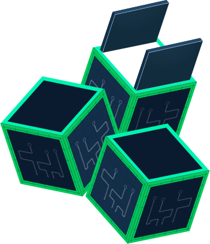

<div class="home-page-container">
    <div class="content-area">
        <div class="content">
            <div class="left-image-area">
                <div class="image-wrapper">
                    
                </div>
            </div>
            <div class="text-area">
                <h1 class="heading">
                    About Green Secure
                </h1>
                <p class="after-heading-text">
                    Green Secure is a compliance tool with the primary objective is to strive to overhaul waste management by acting as a complete service provider within the sector. Green Secure quarantines hazardous industrial waste responsible for environmental pollution establishing a balance for creating a cleaner, freener and pollution-free world.
                </p>
                <div class="button"><button mat-raised-button color='primary'>Read More</button></div>
            </div>
        </div>
    </div>
</div>